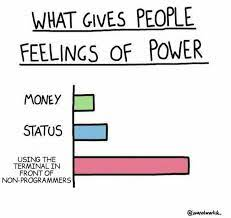
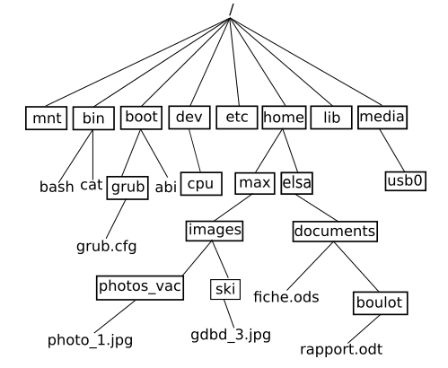

T5.2 OS et commandes UNIX⚓︎

5.2.1 Système d'exploitation⚓︎
Le système d’exploitation (OS) est le logiciel système qui gère l'ordinateur, en jouant un rôle d’intermédiaire entre les programmes, les éléments matériels de l’ordinateur (notamment la mémoire) ainsi que les périphériques d'entrée/sortie. C’est le premier programme exécuté au démarrage de la machine, et c’est le seul qui reste en permanence en exécution.

La partie de l'OS qui gère la communication avec les éléments matériels s'appelle le noyau (kernel).
Outre le noyau, l'OS comporte des applications, une interface graphique, la gestion des fichiers, le terminal...
Historiquement, les premiers systèmes d’exploitation ne disposaient pas d’interface graphique. D’ailleurs, à cette époque, la souris n’existait même pas. On interagissait donc avec le système essentiellement par échange de texte. L’écran servait à recevoir les infor- mations fournies par le système sous forme de phrase, d’affichage de valeur ou de tableau textuel. Aujourd’hui, même si les interfaces graphiques modernes permettent d’effectuer la plupart des opérations, il est important de connaitre quelques-unes de ces lignes de commandes qui se saisissent dans un (émulateur de) terminal, qui lance un shell par défaut.
Vocabulaire

L'émulateur de terminal (souvent appelé terminal tout court) est un programme qui s'exécute dans le gestionnaire de fenêtre. Il sert à exécuter des programmes en mode texte, c'est-à-dire où toute l'interaction avec l'utilisateur se fait avec l'écran (pour afficher du texte) et le clavier (pour lire du texte).
Par défaut le terminal exécute un shell.
Il existe de nombreux émulateurs de terminaux sous Unix: xterm, rxvt-unicode, LXTerminal, gnome-terminal, konsole, xfce4-terminal...
Le shell (aussi appelé invite de commande ou interpréteur de commandes) est un programme avec une interface en mode texte. Le shell affiche un prompt (représenté par le symbole $) et lit les commandes tapées par l'utilisateur. Ces commandes permettent d'effectuer des tâches courantes sur les fichiers et répertoires, de lancer d'autres programmes, etc. Le shell offre aussi un langage permettant d'effectuer des tâche conditionnelles et / ou répétitive à l'aide de structures de controle (conditionnelles, boucles for et while, etc.) Les suites de commandes que l'on souhaite réutiliser peuvent être sauvegardées dans un fichier appelé script.
Il existe de nombreux shell sous Unix. Les plus utilisés dans le monde Linux sont bash et zsh.
Une commande est en général un petit programme externe lancé par le shell. Par exemple, la commande ls permet d'afficher la liste des fichiers contenus dans le répertoire courant. Il est également possible d'exécuter des programmes très complexes (comme un traitement de texte ou un navigateur internet), mais cela est rarement fait depuis le shell.
Principalement, les commandes servent à lancer des petits programmes ou à travailler sur les fichiers et les répertoires. Dans les systèmes de type "UNIX" (par exemple GNU/Linux ou macOS), nous avons un système de fichier en arborescence :

5.2.2 Commandes⚓︎
Pour découvrir un certain nombre de commandes UNIX, parmi les plus courantes, nous allons jouer à un jeu:

Travail à faire
En jouant à Terminus:
- noter au fur et à mesure les commandes découvertes, à quoi elles servent et comment on les utilise (tableau conseillé):
| Nom de la commande | Description | Utilisation |
|---|---|---|
ls |
Lister les éléments du dossier | Saisir ls puis Entrée |
- faire un plan du jeu sous forme d'une arborescence, par exemple:

5.2.3 Compléments sur les commandes⚓︎
On reprend l'exemple de l'arborescence du dossier /home/jeanmichel/ de l'ordinateur de Jean-Michel du DS 6:
.
+-- Travail
| +-- reforme
| +-- HTML
| | +-- images
| | | +-- toto.png
| | | +-- tata.png
| | | +-- tutu.png
| | +-- styles
| | | +-- style.css
| | +-- scripts
| | | +-- script.js
| | +-- index.html
| | +-- page1.html
| | +-- page2.html
+-- Photos
| +-- Ibiza
| | +-- reveillon.png
Chemins
On a vu la commande cd qui permet de changer de répertoire (dossier). Par exemple, pour aller dans le répertoire images depuis la racine, on peut taper successivement:
~$ cd Travail/
~/Travail$ cd HTML/
~/Travail/HTML$ cd images/
~/Travail/HTML/images$
On peut plus rapidement préciser le chemin:
~$ cd Travail/HTML/images/
~/Travail/HTML/images$
Pour revenir à la racine /home/jeanmichel/, on peut taper successivement 3 fois la commande cd .., ou bien plus rapidement:
~/Travail/HTML/images$ cd ../../../
~$
Et pour aller du répertoire images au répertoire scripts, on tapera:
~/Travail/HTML/images$ cd ../scripts/
~/Travail/HTML/scripts$
Options et arguments
On peut ajouter aux commandes UNIX une ou plusieurs options, qui s'écrivent soit:
- avec une lettre précédée d'un tiret;
- avec un mot-clé précédé de 2 tirets.
Tester par exemple dans un de vos répertoires les commandes suivantes:
$ ls
$ ls -l
$ ls -l -h
Attention, l'usage de rm est dangereux, soyez attentif !
La commande rm permet de supprimer définitivement un fichier, il n'y a pas de corbeille dans le shell! Mais pas un répertoire non vide.
Pour effacer tous les fichiers d'un répertoire:
$ rm *
Et pour supprimer tout le contenu d'un répertoire, y compris les sous-répertoires, on utilise l'option -r:
$ rm -r *
On peut parfois préciser plusieurs arguments à une commande pour ne pas répéter plusieurs fois son utilisation. Par exemple pour créer deux répertoires images/ et data/ en même temps dans le répertoire courant:
$ mkdir images/ data/
toto.txt, tata.txt et tutu.txt:
$ touch toto.txt tata.txt tutu.txt
À propos de grep
Comme vu dans l'activité «Terminus», la commance grep permet de rechercher une chaîne de caractéres dans un fichier. La syntaxe générale est:
$ grep options "recherche" chemin
--ignore-caseou-i: pour ignorer la casse (minuscules/majuscules indifférentes);-c: pour afficher seulement le nombre d'occurences de la recherche;-l: pour afficher le nom des fichiers contenant la recherche (cheminest alors un répertoire);-r: pour rechercher dans tous les fichiers et sous-répertoires dechemin, qui est un répertoire.
Pour rechercher dans plusieurs fichiers (comme dans l'activité Terminus) on peut utiliser * qui remplace n'importe quel mot. Par exemple, pour rechercher 'password' dans tous les fichiers txt de l'activité, on aurait pu taper:
$ grep 'password' *.txt
5.2.4 Utilisateurs et droits⚓︎
Un système UNIX est un système multi-utilisateur. Toute personne physique ou tout programme interagissant avec le système est un utilisateur (user). Cet utilisateur est authentifié sur le système par un nom unique et un identifiant unique (UID). Chaque utilisateur possède certains droits lui permettant d'effectuer certaines opérations et pas d'autres (avoir accès aux répertoires et fichiers, aux périphériques, installer des logiciels...).
Pour connaître les utilisateurs de votre système, on consulte le fichier /etc/passwd (faites-le) où on trouve tous les utilisateurs au format:
nom:motdepasse:UID:GID:informations:repertoire:shell
Chaque utilisateur appartient à un ou plusieurs groupes, qui servent à ressembler plusieurs utilisateurs pour leur attribuer des droits (permissions d'accès) communs aux fichiers ou applications.
Pour connaître les utilisateurs de votre système, on consulte le fichier /etc/group (faites-le).
Parmi les utilisateurs, il y a un super-utilisateur appelé root qui a tous les pouvoirs sur le système. Son UID est 0. Pour exécuter une commande réservée au super-utilisateur, un utilisateur doit utiliser la commande sudo (super user do) qui nécessite de connaître le mot de passe root qui en général n'est connu que de l'administrateur du système.
En particulier le super-utilisateur peut modifier les droits (en attribuer ou en retirer) des utilisateurs et des groupes.
Les types de droits r-w-x
- les droits en lecture (symbolisés par la lettre
r) : il est possible de lire le contenu de ce fichier - les droits en écriture (symbolisés par la lettre
w) : il est possible de modifier le contenu de ce fichier - les droits en exécution (symbolisés par la lettre
x) : il est possible d'exécuter le contenu de ce fichier (quand le fichier est du code exécutable)
Les types d'utilisateurs u-g-o
Tout fichier UNIX:
- possède un propriétaire (par défaut l'utilisateur qui l'a créé) : u comme user;
- est associé à un groupe dont on définit les actions sur ce fichier: g comme group;
- peut être éventuellement manipulé par tous les autres utilisateurs : o comme others.
Lecture des droits
Voici ce que me donne la commande ls avec l'option -l pour obtenir des informations sur le contenu du répertoire /Travail/1NSI/Archi/:
- Le premier caractère
-oudindique s'il s'agit d'un fichier ou d'un répertoire; - les 9 caractères suivants représentent dans l'ordre les droits pour les 3 types d'utilisateurs (par paquets de 3 caractères), dans l'ordre ugo. Par exemple pour le premier fichier, le propriétaire u a les droits
rw-, c'est-à-dire lecture, écriture, pas d'éxécution (il ne s'agit pas d'un fichier exécutable), les utilisateurs du groupe ont les mêmes droitsrw-et les autres utilisateurs o ont les droitsr--, c'est-à-dire seulement lecture. Pour les dossiers, tous les utilisateurs ont le droit d'éxécutionx, qui consiste à explorer le répertoire. - ensuite on lit le nombre de liens (notion non étudiée cette année);
- on trouve ensuite le nom du propriétaire du fichier, le nom du groupe, la taille du fichier en octets, la date et l'heure de la dernière modification et enfin le nom du fichier ou répertoire.
Modification des droits
Il est important de ne pas perdre de vu que l'utilisateur "root" a la possibilité de modifier les droits de tous les utilisateurs.
Le propriétaire d'un fichier peut également modifier les permissions d'un fichier ou d'un répertoire à l'aide de la commande chmod.
Elle s'utilise ainsi, en précisant l'utilisateur (a pour tous), l'ajout + ou la suppression - ou la réinitialisation = de la permission et enfin le type de permission:
chmod [u g o a] [+ - =] [r w x] nom_du_fichier
chmod g+w toto.txt
toto.txt.
5.2.5 Exercices⚓︎
Exercice 1
Décrire (papier/crayon) l'effet de chacune des commandes suivantes en supposant qu'elle sont exécutées les unes à la suite des autres.
cd ~mkdir T5mkdir T5/TP_shellcd T5/TP_shelltouch toto.txtls -lchmod g-rwx,o-rwx toto.txtls -lcd ..rm -r TP_shell
Ouvrir un terminal et effectuer ces commandes. Vérifier que tout se déroule comme décrit dans la partie 1.
Exercice 2
On suppose que l'on se trouve dans un répertoire vide TEST/ et qu'on exécute les commandes suivantes. Dessiner l'arborescence finale des fichiers et répertoires en utilisant TEST/ comme racine de l'arborescence.
mkdir series films mangas musiquetouch films/sw.txt mangas/HxH.txtcd series/mkdir ../musique/rap/ got/ oitnb/cd ..cp */*.txt series/got/rm -r mangas
Exercice 3
Consulter la page de manuel d'utilisation de la commande head. Trouver comment l'utiliser pour n'afficher que les 5 premières lignes d'un fichier toto.txt.
TP noté